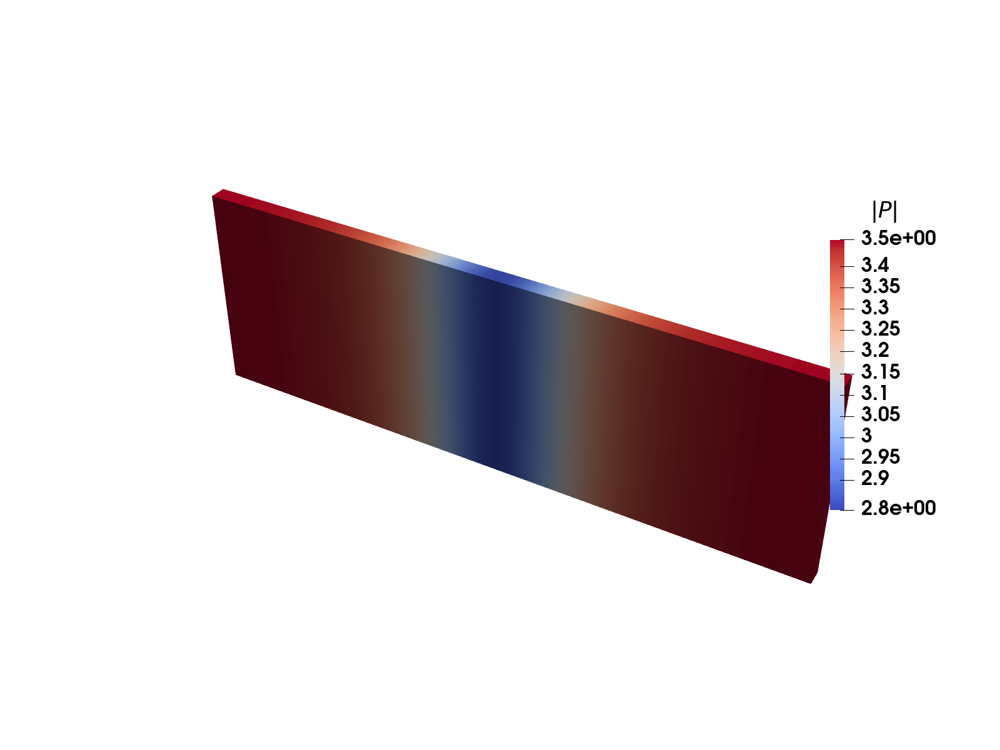
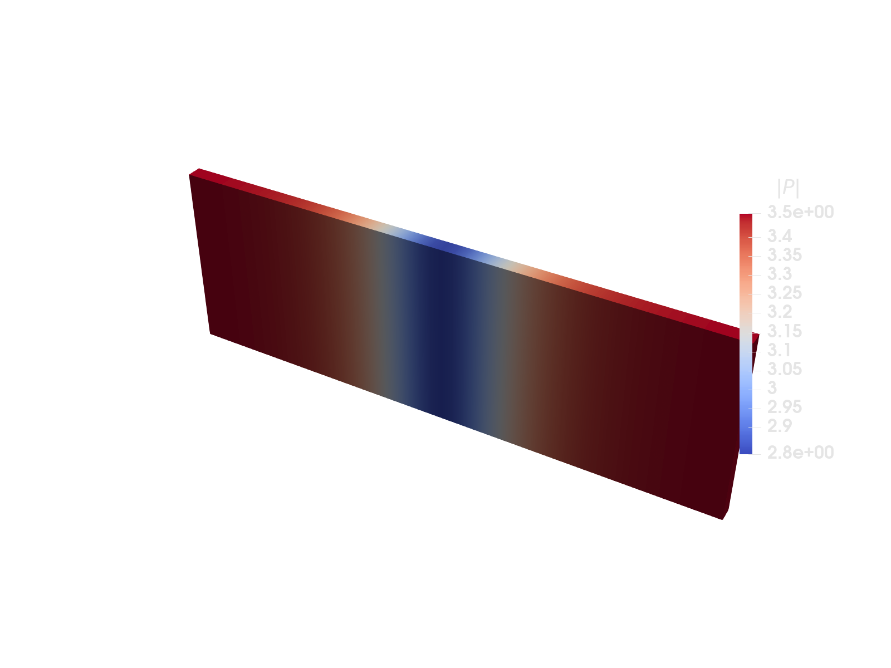
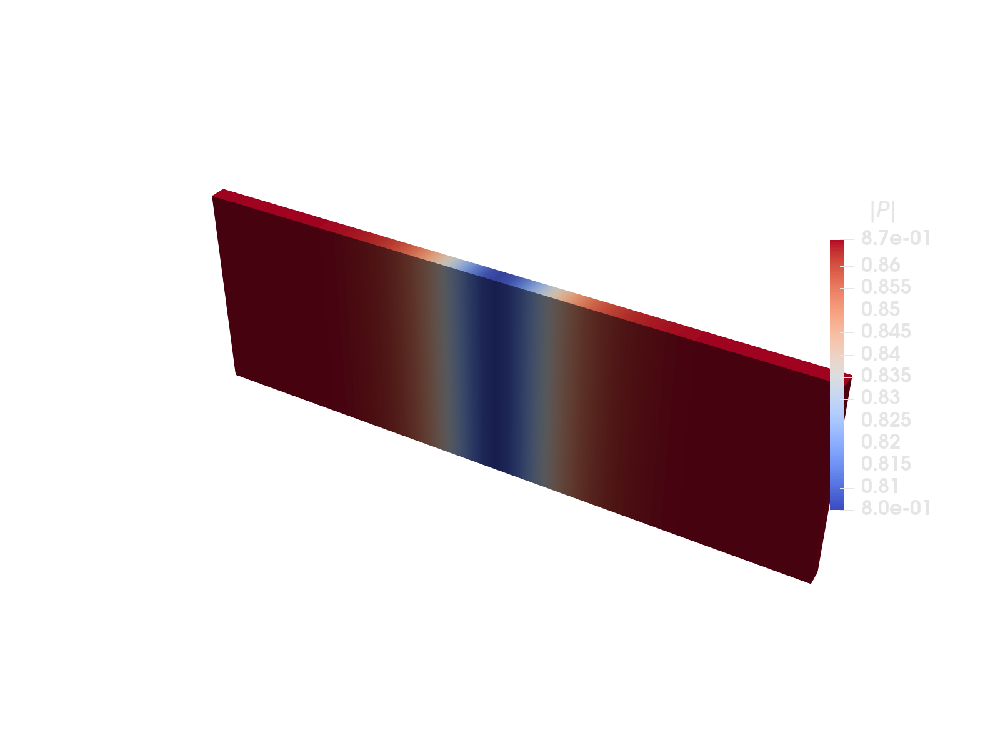

Ginzburg-Landau model energy minimization


Original


Optimized
In this example a basic Ginzburg-Landau model is solved. This example gives an idea of how the API together with automatic differentiation can be leveraged to performantly solve non standard problems on a FEM grid. A large portion of the code is there only for performance reasons, but since this usually really matters and is what takes the most time to optimize, it is included.
The automatic differentiation is done through DifferentiationInterface.jl (DI), which provides a uniform API to many automatic differentiation backends. This lets us swap out the backend used for the element gradient and Hessian without touching the assembly code. Here we use it to compare two forward-mode backends for the element Hessian: ForwardDiff.jl and HyperHessians.jl, the latter being a package specialized for computing Hessians efficiently using hyper-dual numbers.
The key to using a method like this for minimizing a free energy function directly, rather than the weak form, as is usually done with FEM, is to split up the gradient and Hessian calculations. This means that they are performed for each cell separately instead of for the grid as a whole.
using DifferentiationInterfaceimport DifferentiationInterface as DIusing DifferentiationInterface: AutoForwardDiff, AutoHyperHessians, prepare_gradient, prepare_hessianusing ForwardDiff: ForwardDiffusing HyperHessians: HyperHessians # loads the `AutoHyperHessians` backend extension for DIusing Ferriteusing Optim, LineSearchesusing SparseArraysusing Tensorsusing OhMyThreads, ChunkSplittersEnergy terms
4th order Landau free energy
function Fl(P::Vec{3, T}, α::Vec{3}) where {T} P2 = Vec{3, T}((P[1]^2, P[2]^2, P[3]^2)) return α[1] * sum(P2) + α[2] * (P[1]^4 + P[2]^4 + P[3]^4) + α[3] * ((P2[1] * P2[2] + P2[2] * P2[3]) + P2[1] * P2[3])endFl (generic function with 1 method)Ginzburg free energy
@inline Fg(∇P, G) = 0.5(∇P ⊡ G) ⊡ ∇PFg (generic function with 1 method)GL free energy
F(P, ∇P, params) = Fl(P, params.α) + Fg(∇P, params.G)F (generic function with 1 method)Parameters that characterize the model
struct ModelParams{V, T} α::V G::TendTaskCache
This holds the values that each task will use during the assembly. The DI "preparation" objects (grad_prep/hess_prep) cache the backend specific work (dual number buffers, configs, ...) and are reused for every cell handled by the task. Since they contain mutable scratch storage there is one cache, and thus one set of prep objects, per task so the assembly stays allocation free and thread safe.
struct TaskCache{CV, T, DIM, F <: Function, GB, HB, GP, HP} cvP::CV element_indices::Vector{Int} element_dofs::Vector{T} element_gradient::Vector{T} element_hessian::Matrix{T} element_coords::Vector{Vec{DIM, T}} element_potential::F grad_backend::GB hess_backend::HB grad_prep::GP hess_prep::HPendfunction TaskCache(dpc::Int, nodespercell, cvP::CellValues, modelparams, elpotential, grad_backend, hess_backend) element_indices = zeros(Int, dpc) element_dofs = zeros(dpc) element_gradient = zeros(dpc) element_hessian = zeros(dpc, dpc) element_coords = zeros(Vec{3, Float64}, nodespercell) potfunc = x -> elpotential(x, cvP, modelparams) x0 = zeros(dpc) grad_prep = prepare_gradient(potfunc, grad_backend, x0) hess_prep = prepare_hessian(potfunc, hess_backend, x0) return TaskCache(cvP, element_indices, element_dofs, element_gradient, element_hessian, element_coords, potfunc, grad_backend, hess_backend, grad_prep, hess_prep)endMain.TaskCacheThe model
Everything is combined into a model. The caches are pre-allocated (one per task) and indexed by chunk index during assembly.
mutable struct LandauModel{T, DH <: DofHandler, CH <: ConstraintHandler, TC <: TaskCache} dofs::Vector{T} dofhandler::DH boundaryconds::CH colors::Vector{Vector{Int}} caches::Vector{TC}endThe element gradient is always computed with ForwardDiff (HyperHessians is a Hessian-only package), while the backend used for the element Hessian is configurable through the hess_backend keyword so we can compare AutoForwardDiff and AutoHyperHessians.
function LandauModel( α, G, gridsize, left::Vec{DIM, T}, right::Vec{DIM, T}, elpotential, ntasks; # Chunk size chosen by empirical testing for what had good performance # Hessian AD (second order) tends to benefit from smaller chunks than # gradients (first order). grad_backend = AutoForwardDiff(; chunksize = 12), hess_backend = AutoForwardDiff(; chunksize = 4), ) where {DIM, T} grid = generate_grid(Tetrahedron, gridsize, left, right) colors = create_coloring(grid) qr = QuadratureRule{RefTetrahedron}(2) ipP = Lagrange{RefTetrahedron, 1}()^3 cvP = CellValues(qr, ipP) dofhandler = DofHandler(grid) add!(dofhandler, :P, ipP) close!(dofhandler) dofvector = zeros(ndofs(dofhandler)) startingconditions!(dofvector, dofhandler) boundaryconds = ConstraintHandler(dofhandler) #boundary conditions can be added but aren't necessary for optimization #add!(boundaryconds, Dirichlet(:P, getfacetset(grid, "left"), (x, t) -> [0.0,0.0,0.53], [1,2,3])) #add!(boundaryconds, Dirichlet(:P, getfacetset(grid, "right"), (x, t) -> [0.0,0.0,-0.53], [1,2,3])) close!(boundaryconds) update!(boundaryconds, 0.0) apply!(dofvector, boundaryconds) dpc = ndofs_per_cell(dofhandler) cpc = length(grid.cells[1].nodes) caches = [TaskCache(dpc, cpc, copy(cvP), ModelParams(α, G), elpotential, grad_backend, hess_backend) for _ in 1:ntasks] return LandauModel(dofvector, dofhandler, boundaryconds, colors, caches)endMain.LandauModelutility to quickly save a model
function save_landau(path, model, dofs = model.dofs) VTKGridFile(path, model.dofhandler) do vtk write_solution(vtk, model.dofhandler, dofs) end returnendsave_landau (generic function with 2 methods)Assembly
This helper sets up the cell data in the cache for a given cell index, and returns the element dof values.
function setup_cell!(cache, dofhandler, dofvector, cellidx) nodeids = dofhandler.grid.cells[cellidx].nodes for j in 1:length(cache.element_coords) cache.element_coords[j] = dofhandler.grid.nodes[nodeids[j]].x end reinit!(cache.cvP, cache.element_coords) celldofs!(cache.element_indices, dofhandler, cellidx) eldofs = cache.element_dofs for j in 1:length(eldofs) eldofs[j] = dofvector[cache.element_indices[j]] end return eldofsendsetup_cell! (generic function with 1 method)This calculates the total energy of the grid.
function F(dofvector::Vector{T}, model) where {T} out = zero(T) for indices in model.colors partial = OhMyThreads.@tasks for (ichunk, range) in enumerate(chunks(indices; n = length(model.caches))) OhMyThreads.@set reducer = + cache = model.caches[ichunk] local_energy = zero(T) for i in range eldofs = setup_cell!(cache, model.dofhandler, dofvector, i) local_energy += cache.element_potential(eldofs) end local_energy end out += partial end return outendF (generic function with 2 methods)The gradient calculation for each dof. The grid coloring ensures no two tasks within a color share dofs, so assembly is safe without locks.
function ∇F!(∇f::Vector{T}, dofvector::Vector{T}, model::LandauModel{T}) where {T} fill!(∇f, zero(T)) for indices in model.colors OhMyThreads.@tasks for (ichunk, range) in enumerate(chunks(indices; n = length(model.caches))) cache = model.caches[ichunk] for i in range eldofs = setup_cell!(cache, model.dofhandler, dofvector, i) DI.gradient!(cache.element_potential, cache.element_gradient, cache.grad_prep, cache.grad_backend, eldofs) @inbounds assemble!(∇f, cache.element_indices, cache.element_gradient) end end end returnend∇F! (generic function with 1 method)The Hessian calculation for the whole grid
function ∇²F!(∇²f::SparseMatrixCSC, dofvector::Vector{T}, model::LandauModel{T}) where {T} dh = model.dofhandler ntasks = length(model.caches) assemblers = [start_assemble(∇²f; fillzero = (i == 1)) for i in 1:ntasks] for indices in model.colors OhMyThreads.@tasks for (ichunk, range) in enumerate(chunks(indices; n = ntasks)) cache = model.caches[ichunk] for i in range eldofs = setup_cell!(cache, dh, dofvector, i) DI.hessian!(cache.element_potential, cache.element_hessian, cache.hess_prep, cache.hess_backend, eldofs) @inbounds assemble!(assemblers[ichunk], cache.element_indices, cache.element_hessian) end end end returnend∇²F! (generic function with 1 method)Minimization
Now everything can be combined to minimize the energy, and find the equilibrium configuration.
function minimize!(model; kwargs...) dh = model.dofhandler dofs = model.dofs ∇f = fill(0.0, length(dofs)) ∇²f = allocate_matrix(dh) function g!(storage, x) ∇F!(storage, x, model) return apply_zero!(storage, model.boundaryconds) end function h!(storage, x) return ∇²F!(storage, x, model) # apply!(storage, model.boundaryconds) end f(x) = F(x, model) od = TwiceDifferentiable(f, g!, h!, model.dofs, 0.0, ∇f, ∇²f) # this way of minimizing is only beneficial when the initial guess is completely off, # then a quick couple of ConjuageGradient steps brings us easily closer to the minimum. # res = optimize(od, model.dofs, ConjugateGradient(linesearch=BackTracking()), Optim.Options(show_trace=true, show_every=1, g_tol=1e-20, iterations=10)) # model.dofs .= res.minimizer # to get the final convergence, Newton's method is more ideal since the energy landscape should be almost parabolic ##+ res = optimize(od, model.dofs, Newton(linesearch = BackTracking()), Optim.Options(show_trace = true, show_every = 1, g_tol = 1.0e-20)) model.dofs .= res.minimizer return resendminimize! (generic function with 1 method)Testing it
This calculates the contribution of each element to the total energy, it is also the function that will be put through ForwardDiff for the gradient and Hessian.
function element_potential(eldofs::AbstractVector{T}, cvP, params) where {T} energy = zero(T) for qp in 1:getnquadpoints(cvP) P = function_value(cvP, qp, eldofs) ∇P = function_gradient(cvP, qp, eldofs) energy += F(P, ∇P, params) * getdetJdV(cvP, qp) end return energyendelement_potential (generic function with 1 method)now we define some starting conditions
function startingconditions!(dofvector, dofhandler) for cell in CellIterator(dofhandler) globaldofs = celldofs(cell) it = 1 for i in 1:3:length(globaldofs) dofvector[globaldofs[i]] = -2.0 dofvector[globaldofs[i + 1]] = 2.0 dofvector[globaldofs[i + 2]] = -2.0tanh(cell.coords[it][1] / 20) it += 1 end end returnendδ(i, j) = i == j ? one(i) : zero(i)V2T(p11, p12, p44) = Tensor{4, 3}((i, j, k, l) -> p11 * δ(i, j) * δ(k, l) * δ(i, k) + p12 * δ(i, j) * δ(k, l) * (1 - δ(i, k)) + p44 * δ(i, k) * δ(j, l) * (1 - δ(i, j)))G = V2T(1.0e2, 0.0, 1.0e2)α = Vec{3}((-1.0, 1.0, 1.0))left = Vec{3}((-75.0, -25.0, -2.0))right = Vec{3}((75.0, 25.0, 2.0))model = LandauModel(α, G, (50, 50, 2), left, right, element_potential, Threads.nthreads(); hess_backend = AutoHyperHessians(; chunksize = 4));save_landau("landauorig", model)@time res = minimize!(model)@assert Optim.converged(res)save_landau("landaufinal", model)using Test # src@test Optim.minimum(res) ≈ -10858.806775 # srcTest PassedAs we can see this runs quickly even for relatively large gridsizes. The key to get high performance like this is to minimize the allocations inside the threaded loops, ideally to 0.
Comparing AD backends for the Hessian
Since the Hessian backend is just a keyword argument, we can build two otherwise identical models and compare how AutoForwardDiff and AutoHyperHessians perform on the global Hessian assembly. We assemble into a freshly allocated sparse matrix for each backend at the converged solution and time the assembly (running it once first to exclude compilation).
function time_hessian_assembly(model) ∇²f = allocate_matrix(model.dofhandler) ∇²F!(∇²f, model.dofs, model) # warmup / compilation @time ∇²F!(∇²f, model.dofs, model) return ∇²fendmodel_fd = LandauModel(α, G, (50, 50, 2), left, right, element_potential, Threads.nthreads(); hess_backend = AutoForwardDiff(; chunksize = 4));model_hh = LandauModel(α, G, (50, 50, 2), left, right, element_potential, Threads.nthreads(); hess_backend = AutoHyperHessians(; chunksize = 4));model_fd.dofs .= model.dofsmodel_hh.dofs .= model.dofsprintln("ForwardDiff Hessian assembly:")H_fd = time_hessian_assembly(model_fd)println("HyperHessians Hessian assembly:")H_hh = time_hessian_assembly(model_hh)23409×23409 SparseMatrixCSC{Float64, Int64} with 847863 stored entries:
⎡⢿⣷⣄⠀⠀⠀⠀⠀⠀⠀⠀⠀⠀⠀⠀⠀⠀⠀⠀⠀⠀⠀⠀⠀⠀⠀⠸⣇⠀⠀⠀⠀⠀⠀⠀⠀⠀⠀⠀⠀⎤
⎢⠀⠙⢿⣷⣄⠀⠀⠀⠀⠀⠀⠀⠀⠀⠀⠀⠀⠀⠀⠀⠀⠀⠀⠀⠀⠀⠀⠹⣆⠀⠀⠀⠀⠀⠀⠀⠀⠀⠀⠀⎥
⎢⠀⠀⠀⠙⢿⣷⣄⠀⠀⠀⠀⠀⠀⠀⠀⠀⠀⠀⠀⠀⠀⠀⠀⠀⠀⠀⠀⠀⠹⣆⠀⠀⠀⠀⠀⠀⠀⠀⠀⠀⎥
⎢⠀⠀⠀⠀⠀⠙⢿⣷⣄⠀⠀⠀⠀⠀⠀⠀⠀⠀⠀⠀⠀⠀⠀⠀⠀⠀⠀⠀⠀⠹⣆⠀⠀⠀⠀⠀⠀⠀⠀⠀⎥
⎢⠀⠀⠀⠀⠀⠀⠀⠙⢿⣷⣄⠀⠀⠀⠀⠀⠀⠀⠀⠀⠀⠀⠀⠀⠀⠀⠀⠀⠀⠀⠹⣆⠀⠀⠀⠀⠀⠀⠀⠀⎥
⎢⠀⠀⠀⠀⠀⠀⠀⠀⠀⠙⢿⣷⣄⠀⠀⠀⠀⠀⠀⠀⠀⠀⠀⠀⠀⠀⠀⠀⠀⠀⠀⠹⣆⠀⠀⠀⠀⠀⠀⠀⎥
⎢⠀⠀⠀⠀⠀⠀⠀⠀⠀⠀⠀⠙⢿⣷⣄⠀⠀⠀⠀⠀⠀⠀⠀⠀⠀⠀⠀⠀⠀⠀⠀⠀⠹⣆⠀⠀⠀⠀⠀⠀⎥
⎢⠀⠀⠀⠀⠀⠀⠀⠀⠀⠀⠀⠀⠀⠙⢿⣷⣄⠀⠀⠀⠀⠀⠀⠀⠀⠀⠀⠀⠀⠀⠀⠀⠀⠹⣆⠀⠀⠀⠀⠀⎥
⎢⠀⠀⠀⠀⠀⠀⠀⠀⠀⠀⠀⠀⠀⠀⠀⠙⢿⣷⣄⠀⠀⠀⠀⠀⠀⠀⠀⠀⠀⠀⠀⠀⠀⠀⠹⣆⠀⠀⠀⠀⎥
⎢⠀⠀⠀⠀⠀⠀⠀⠀⠀⠀⠀⠀⠀⠀⠀⠀⠀⠙⢿⣷⣄⠀⠀⠀⠀⠀⠀⠀⠀⠀⠀⠀⠀⠀⠀⠹⣆⠀⠀⠀⎥
⎢⠀⠀⠀⠀⠀⠀⠀⠀⠀⠀⠀⠀⠀⠀⠀⠀⠀⠀⠀⠙⢿⣷⣄⠀⠀⠀⠀⠀⠀⠀⠀⠀⠀⠀⠀⠀⠹⣆⠀⠀⎥
⎢⠀⠀⠀⠀⠀⠀⠀⠀⠀⠀⠀⠀⠀⠀⠀⠀⠀⠀⠀⠀⠀⠙⢿⣷⣄⠀⠀⠀⠀⠀⠀⠀⠀⠀⠀⠀⠀⠹⣆⠀⎥
⎢⠀⠀⠀⠀⠀⠀⠀⠀⠀⠀⠀⠀⠀⠀⠀⠀⠀⠀⠀⠀⠀⠀⠀⠙⢿⣷⣄⠀⠀⠀⠀⠀⠀⠀⠀⠀⠀⠀⠹⣆⎥
⎢⠶⢦⣄⡀⠀⠀⠀⠀⠀⠀⠀⠀⠀⠀⠀⠀⠀⠀⠀⠀⠀⠀⠀⠀⠀⠙⠻⣦⡀⠀⠀⠀⠀⠀⠀⠀⠀⠀⠀⠙⎥
⎢⠀⠀⠈⠙⠳⢦⣄⡀⠀⠀⠀⠀⠀⠀⠀⠀⠀⠀⠀⠀⠀⠀⠀⠀⠀⠀⠀⠈⠻⣦⡀⠀⠀⠀⠀⠀⠀⠀⠀⠀⎥
⎢⠀⠀⠀⠀⠀⠀⠈⠙⠳⢦⣄⡀⠀⠀⠀⠀⠀⠀⠀⠀⠀⠀⠀⠀⠀⠀⠀⠀⠀⠈⠻⣦⡀⠀⠀⠀⠀⠀⠀⠀⎥
⎢⠀⠀⠀⠀⠀⠀⠀⠀⠀⠀⠈⠙⠳⢦⣄⡀⠀⠀⠀⠀⠀⠀⠀⠀⠀⠀⠀⠀⠀⠀⠀⠈⠻⣦⡀⠀⠀⠀⠀⠀⎥
⎢⠀⠀⠀⠀⠀⠀⠀⠀⠀⠀⠀⠀⠀⠀⠈⠙⠳⢦⣄⡀⠀⠀⠀⠀⠀⠀⠀⠀⠀⠀⠀⠀⠀⠈⠻⣦⡀⠀⠀⠀⎥
⎢⠀⠀⠀⠀⠀⠀⠀⠀⠀⠀⠀⠀⠀⠀⠀⠀⠀⠀⠈⠙⠳⢦⣄⡀⠀⠀⠀⠀⠀⠀⠀⠀⠀⠀⠀⠈⠻⣦⡀⠀⎥
⎣⠀⠀⠀⠀⠀⠀⠀⠀⠀⠀⠀⠀⠀⠀⠀⠀⠀⠀⠀⠀⠀⠀⠈⠙⠳⢦⣄⠀⠀⠀⠀⠀⠀⠀⠀⠀⠀⠈⠻⣦⎦This page was generated using Literate.jl.